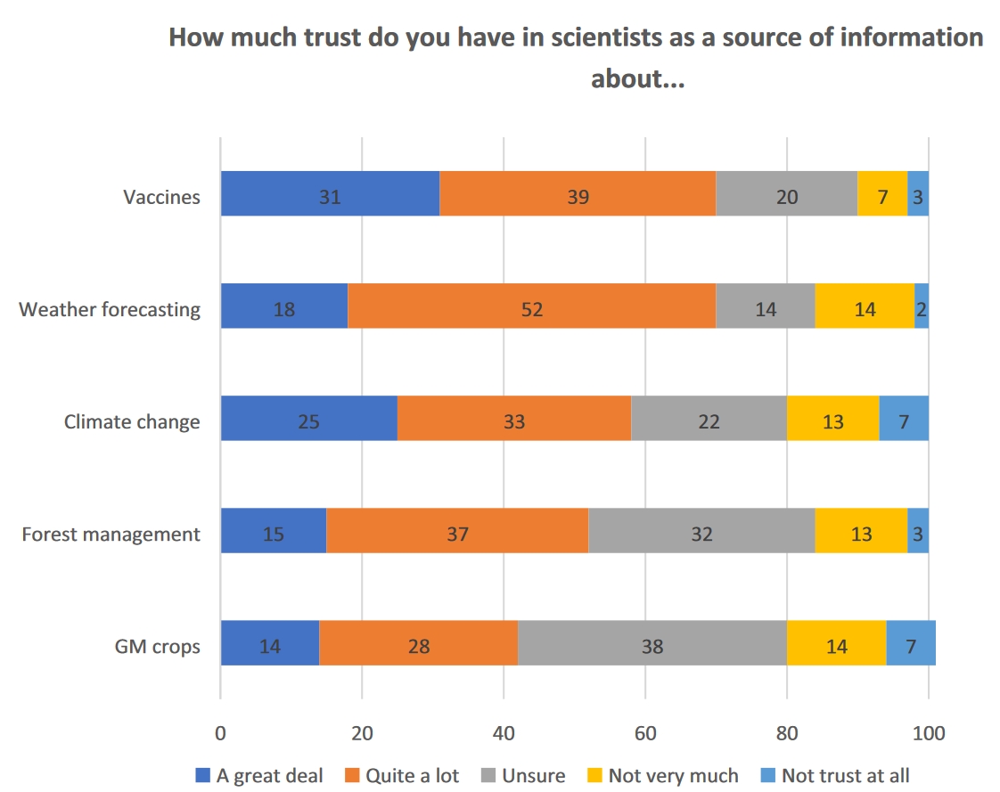
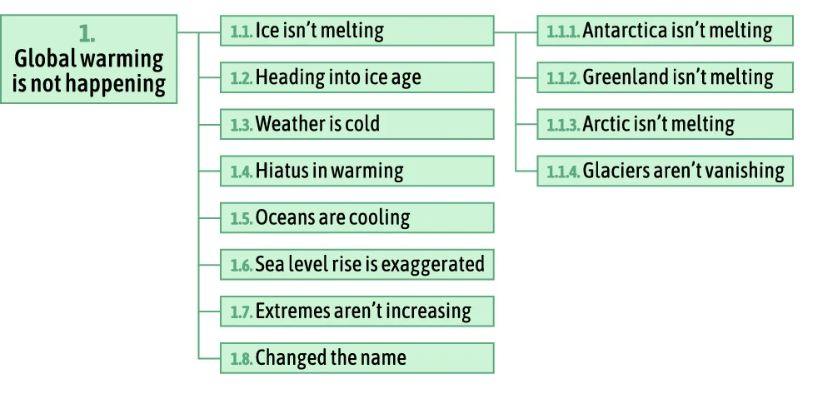

The psychological roots of the rejection (and acceptance) of science
Matthew Andreotta
Postdoctoral Fellow at CSIRO
26 May 2023
Blog: matt-lab.github.io
Twitter: @MattAndreotta
LinkedIn: @matthew-andreotta
Link to handout: tinyurl.com/cms-materials
Link to slides: tinyurl.com/cms-workshop
Public trust of science
Good news! Australians generally trust science

- Majority of Australians trust science and scientists (3M State of Science, 2022; Tranter, 2023)
- … but it depends on the science (Tranter, 2023) 
- Often, scientists are trusted more than other officials (3M State of Science, 2022; Martin, Mikołajczak, Baekkeskov, & Hartley, 2022; Pew Research Center, 2022)
- Portion of the public are distrustful of science (Mede & Schäfer, 2020)
- Public may be vulnerable to misinformation about specific sciences (Rutjens, van der Linden, van der Lee, & Zarzeczna, 2021)
Anti-science claims about climate change
- Taxonomy of climate change contrarians (Coan, Boussalis, Cook, & Nanko, 2021):



References
3M State of Science. (2022). 2022 Survey Data | State of Science Index Survey | 3M Australia. https://www.3m.com.au/3M/en_AU/state-of-science-index-survey-au/interactive-3m-state-of-science-survey/.
Andreotta, M., Boschetti, F., Farrell, S., Paris, C., Walker, I., & Hurlstone, M. (2022). Evidence for three distinct climate change audience segments with varying belief-updating tendencies: Implications for climate change communication. Climatic Change, 174(3), 32. https://doi.org/10.1007/s10584-022-03437-5
Campbell, T. H., & Kay, A. C. (2014). Solution Aversion: On the Relation Between Ideology and Motivated Disbelief. Journal of Personality and Social Psychology, 107(5), 809–824. https://doi.org/10.1037/a0037963
Coan, T. G., Boussalis, C., Cook, J., & Nanko, M. O. (2021). Computer-assisted classification of contrarian claims about climate change. Scientific Reports, 11(1), 22320. https://doi.org/10.1038/s41598-021-01714-4
Douglas, K., Sutton, R., & Cichocka, A. (2017). The psychology of conspiracy theories. Current Directions in Psychological Science, 26(6), 538–542. https://doi.org/10.1177/0963721417718261
Douglas, M., & Wildavsky, A. (1983). Risk and Culture: An Essay on the Selection of Technological and Environmental Dangers. University of California Press.
Hornsey, M. J. (2020). Why facts are not enough: Understanding and managing the motivated rejection of science. Current Directions in Psychological Science, 29(6), 583–591. https://doi.org/10.1177/0963721420969364
Hornsey, M. J. (2021). The role of worldviews in shaping how people appraise climate change. Current Opinion in Behavioral Sciences, 42, 36–41. https://doi.org/10.1016/j.cobeha.2021.02.021
Hornsey, M. J., Harris, E. A., & Fielding, K. S. (2018a). Relationships Among Conspiratorial Beliefs, Conservatism and Climate Scepticism across Nations. Nature Climate Change, 8(7), 614–620. https://doi.org/10.1038/s41558-018-0157-2
Hornsey, M. J., Harris, E. A., & Fielding, K. S. (2018b). The psychological roots of anti-vaccination attitudes: A 24-nation investigation. Health Psychology, 37(4), 307–315. https://doi.org/10.1037/hea0000586
Inayatullah, S. (2004). The Causal Layered Analysis (CLA) Reader: Theory and Case Studies of an Integrative and Transformative Methodology. Tamkang University Press.
Intergovernmental Panel on Climate Change. (2022). North America. In Climate Change 2022: Impacts, Adaptation and Vulnerability. Contribution of Working Group II to the Sixth Assessment Report of the Intergovernmental Panel on Climate Change. Cambridge University Press.
Jacques, P. J., Dunlap, R. E., & Freeman, M. (2008). The organisation of denial: Conservative think tanks and environmental scepticism. Environmental Politics, 17(3), 349–385. https://doi.org/10.1080/09644010802055576
Jolley, D., & Paterson, J. L. (2020). Pylons ablaze: Examining the role of 5G COVID-19 conspiracy beliefs and support for violence. British Journal of Social Psychology, 59(3), 628–640. https://doi.org/10.1111/bjso.12394
Kahan, D. M., Braman, D., Gastil, J., Slovic, P., & Mertz, C. K. (2007). Culture and Identity-Protective Cognition: Explaining the White-Male Effect in Risk Perception. Journal of Empirical Legal Studies, 4(3), 465–505. https://doi.org/10.1111/j.1740-1461.2007.00097.x
Koltko-Rivera, M. E. (2004). The Psychology of Worldviews. Review of General Psychology, 8(1), 3–58. https://doi.org/10.1037/1089-2680.8.1.3
Lewandowsky, S. (2021). Conspiracist Cognition: Chaos, Convenience, and Cause for Concern. Journal for Cultural Research, 25(1), 12–35. https://doi.org/10.1080/14797585.2021.1886423
Lewandowsky, S., & Cook, J. (2020). The Conspiracy Theory Handbook.
Lewandowsky, S., Cook, J., Ecker, U. K. H., Albarracín, D., Amazeen, M. A., Kendeou, P., … Zaragoza, M. S. (2020). The Debunking Handbook 2020. https://doi.org/10.17910/b7.1182
Lewandowsky, S., Gignac, G. E., & Oberauer, K. (2013). The Role of Conspiracist Ideation and Worldviews in Predicting Rejection of Science. PLOS ONE, 8(10). https://doi.org/10.1371/journal.pone.0075637
Martin, A., Mikołajczak, G., Baekkeskov, E., & Hartley, K. (2022). Political stability, trust and support for public policies: A survey experiment examining source effects for COVID-19 interventions in Australia and Hong Kong. International Journal of Public Opinion Research, 34(3), edac024. https://doi.org/10.1093/ijpor/edac024
McCright, A. M., & Dunlap, R. E. (2010). Anti-reflexivity. Theory, Culture & Society, 27(2-3), 100–133. https://doi.org/10.1177/0263276409356001
Mede, N. G., & Schäfer, M. S. (2020). Science-related populism: Conceptualizing populist demands toward science. Public Understanding of Science, 29(5), 473–491. https://doi.org/10.1177/0963662520924259
Mede, N. G., Schäfer, M. S., Metag, J., & Klinger, K. (2022). Who supports science-related populism? A nationally representative survey on the prevalence and explanatory factors of populist attitudes toward science in Switzerland. PLOS ONE, 17(8), e0271204. https://doi.org/10.1371/journal.pone.0271204
Pew Research Center. (2022). Americans’ Trust in Scientists, Other Groups Declines.
Philipp-Muller, A., Lee, S. W. S., & Petty, R. E. (2022). Why are people antiscience, and what can we do about it? Proceedings of the National Academy of Sciences, 119(30), e2120755119. https://doi.org/10.1073/pnas.2120755119
Price, J. C., Walker, I. A., & Boschetti, F. (2014). Measuring Cultural Values and Beliefs about Environment to Identify their Role in Climate Change Responses. Journal of Environmental Psychology, 37, 8–20. https://doi.org/10.1016/j.jenvp.2013.10.001
Rossen, I., Hurlstone, M. J., Dunlop, P. D., & Lawrence, C. (2019). Accepters, fence sitters, or rejecters: Moral profiles of vaccination attitudes. Social Science & Medicine, 224, 23–27. https://doi.org/10.1016/j.socscimed.2019.01.038
Rutjens, B. T., van der Linden, S., van der Lee, R., & Zarzeczna, N. (2021). A group processes approach to antiscience beliefs and endorsement of “alternative facts.” Group Processes & Intergroup Relations, 24(4), 513–517. https://doi.org/10.1177/13684302211009708
Schwartz, S. H. (2012). An Overview of the Schwartz Theory of Basic Values. Online Read. Psychol. Cult., 2(1), 1–20.
Secretary-General to United Nations General Assembly. (2022). Countering disinformation for the promotion and protection of human rights and fundamental freedoms.
Tranter, B. (2023). Do Australians trust scientists? It depends on the “science.” Australian Journal of Social Issues. https://doi.org/10.1002/ajs4.263
World Health Organization. (2020). Managing the COVID-19 infodemic: Promoting healthy behaviours and mitigating the harm from misinformation and disinformation. https://www.who.int/news/item/23-09-2020-managing-the-covid-19-infodemic-promoting-healthy-behaviours-and-mitigating-the-harm-from-misinformation-and-disinformation.